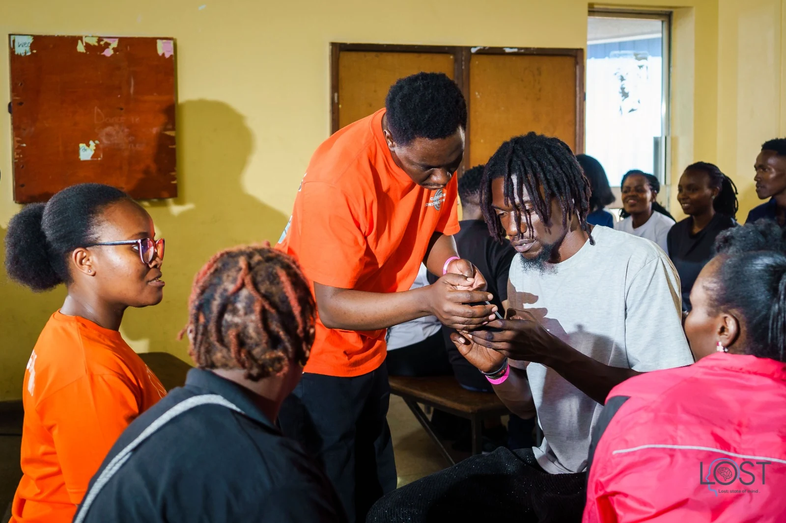
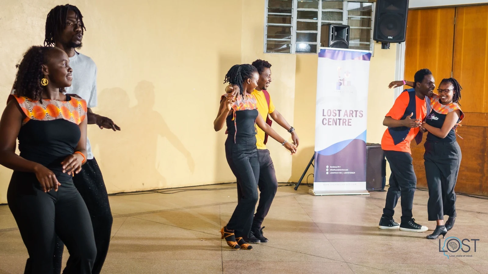
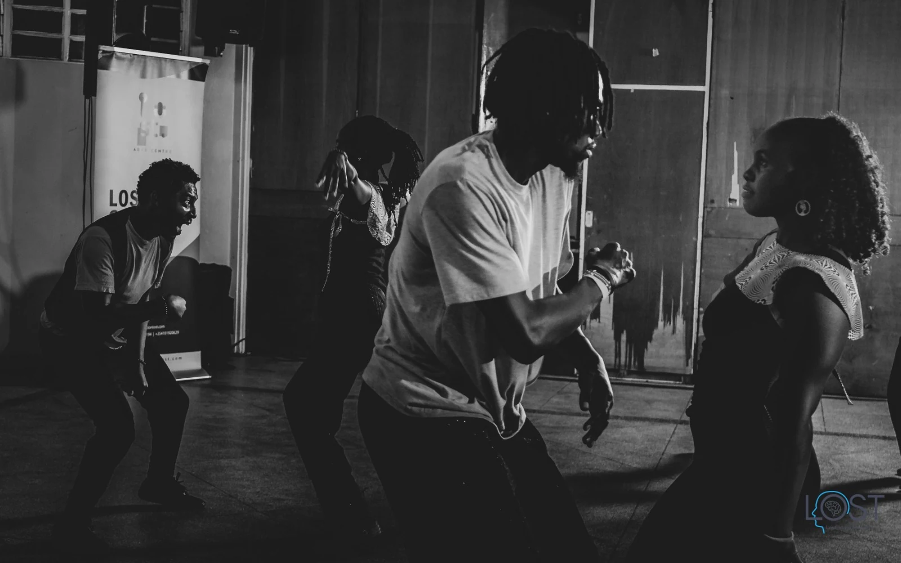
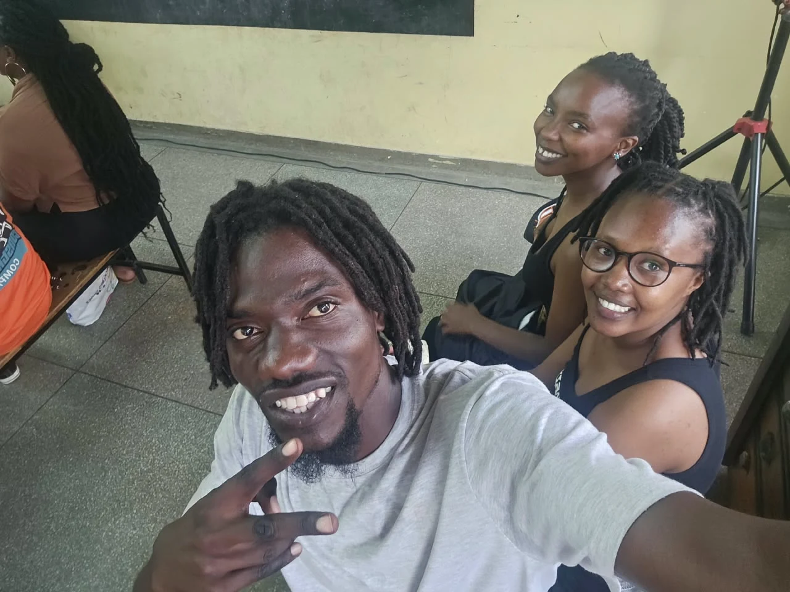
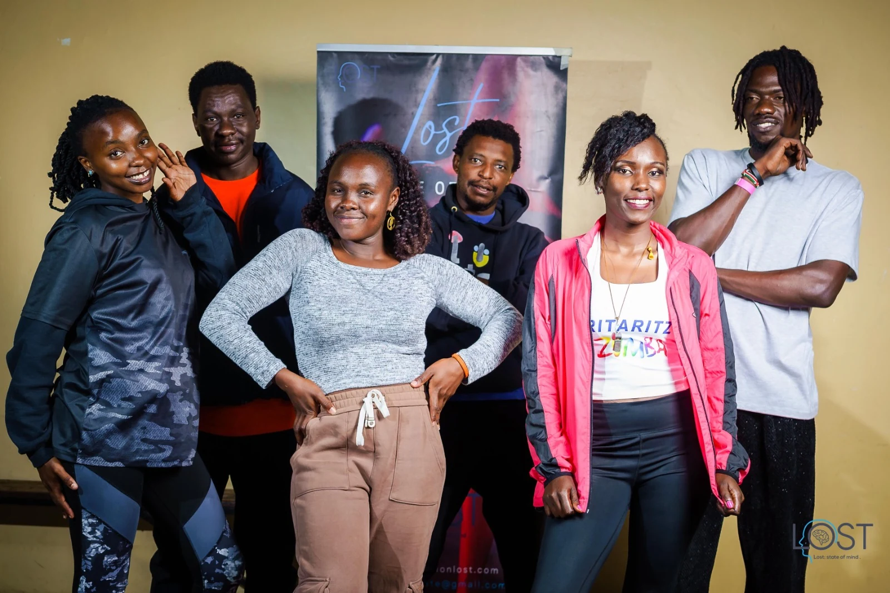
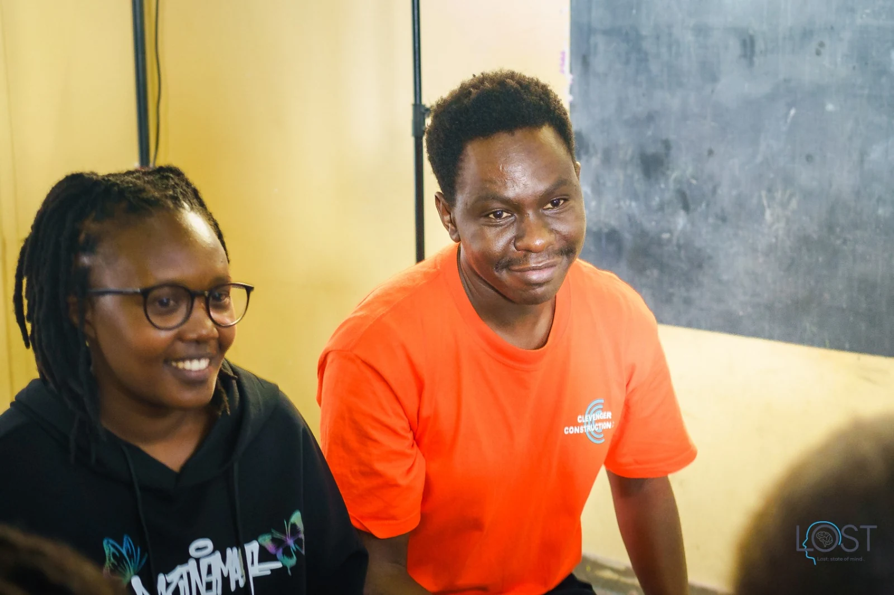
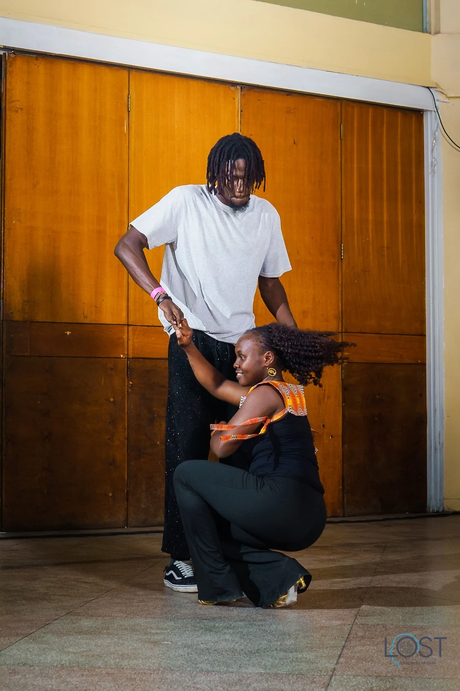
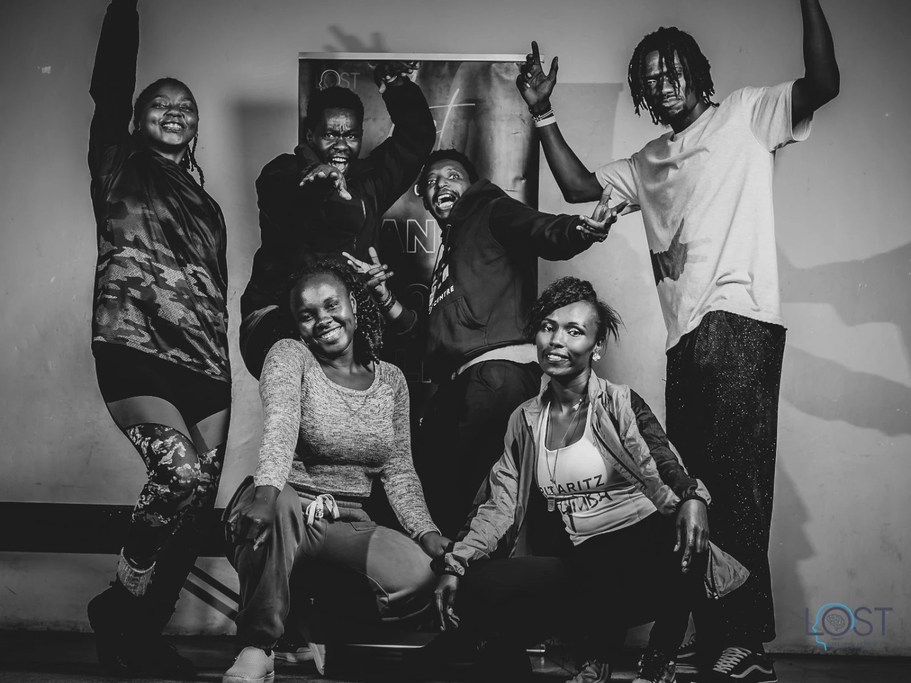

Gatherings
What’s on
Small, side by side, and open to anyone 18 and over. Exact places are sent when you RSVP.
Overview


14 Nov
19:00
19:00
Sample
RSVPSupper and a walk
Nairobi (exact place sent on RSVP)
Bring: A dish to share and shoes you can walk in. Access: Step-free, seating available, normal lighting.


22 Nov
10:00
10:00
Sample
RSVPBuild day: refit a studio
Nairobi (exact place sent on RSVP)
Bring: Clothes you can work in. Access: Some lifting; seated tasks available.
The settings
Same people, a new context. Any of these will do.
- Walking — take the long way; it’s where the real answers are.
- Building and fixing — build something together; even a wobbly shelf holds a friendship up.
- Volunteering and helping — give an afternoon, get a friend back.
- Games and puzzles — lose a game together, win each other.
- Learning — learn something new, badly, together.
- Making and creating — paint badly, laugh loudly.
- Planting and growing — plant a tree; wait for the friendship to grow with it.
- Getting out of town — change the scenery; watch the people change.
- Quiet company — sit together, say nothing, feel better.
From past gatherings












First time?
Read what to expect, and what is never expected.